Explore Venice
A Brief History
Venice grew from lagoon settlements in the 5th century into a maritime republic linking the Adriatic with the eastern Mediterranean through trade and naval power. Palaces, churches, bridges, and institutions such as the Arsenal reflect mercantile government, artistic patronage, and engineering shaped by canals and tidal islands. Decline after the 16th century and Austrian rule preceded incorporation into Italy in 1866.
Attractions Map
Top Sights & Activities
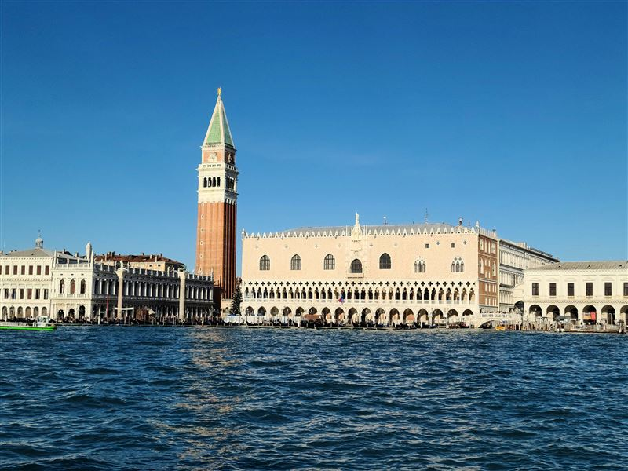
Palazzo Ducale
The Doge's Palace combined the residence of the doge with council chambers, courts, and administrative rooms of the Venetian Republic. The present Gothic complex was built mainly in the 14th and 15th centuries and remains a record of the city's civic government. The Scala d'Oro, Senate hall, and Bridge of Sighs route show how Venice governed its maritime empire.
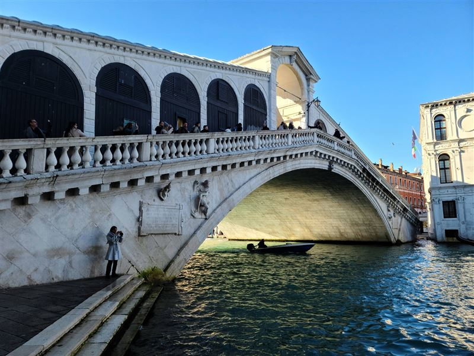
Ponte di Rialto
The Rialto Bridge was completed in 1591 as the main stone crossing of the Grand Canal at Venice's historic commercial center. Its arcades and location near the market made it central to trade and daily movement within the city. Shops line the covered walkway, and the span remains one of the busiest pedestrian routes between San Marco and San Polo.
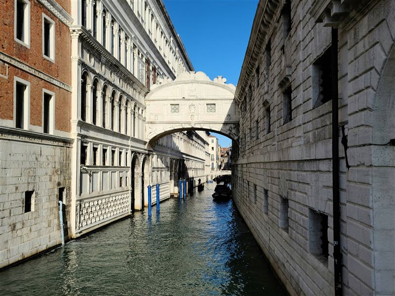
Ponte dei Sospiri
The Bridge of Sighs was completed in the early 17th century to connect the Doge's Palace with the New Prison. Its enclosed limestone passage became one of the most recognized symbols of Venice and its judicial institutions. The bridge can be viewed from the canal or entered as part of a Doge's Palace itinerary crossing between court and cells.
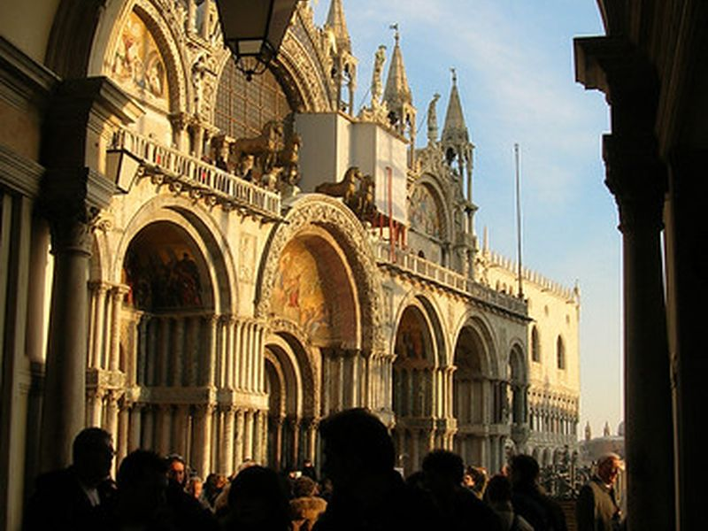
Piazza San Marco
Saint Mark's Square developed as the ceremonial center of Venice beside the basilica, campanile, and procuratie. It was the public forecourt of the republic and remains the city's main civic gathering space. Cafés, arcades, and open paving create a stage for daily tourism, state events, and acqua alta flooding in the lowest part of the city.
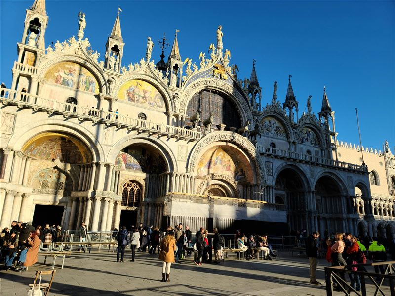
Basilica di San Marco
Saint Mark's Basilica took shape from the 11th century as the state church of the Venetian Republic and shrine of Saint Mark. Its mosaics, domes, and marble surfaces reflect trade links with Byzantium and the eastern Mediterranean. The Pala d'Oro altarpiece and treasury hold relics and liturgical objects gathered through Venice's commercial networks.
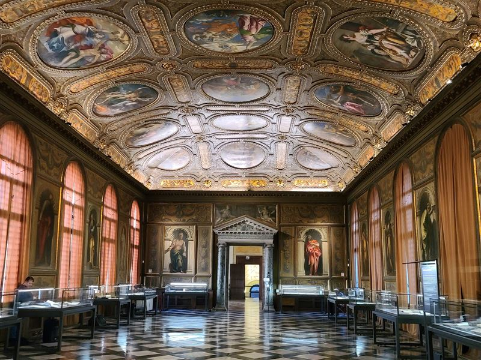
Biblioteca Nazionale Marciana
The Marciana Library grew from the humanist collections given to Venice in the 15th century and occupies Sansovino's library building on Saint Mark's Square. It remains one of Italy's major research libraries for manuscripts and early printed books. The reading rooms and exhibition spaces display maps, classical texts, and Renaissance book culture tied to Venetian scholarship.
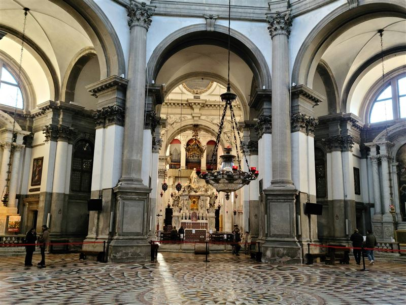
Basilica Santa Maria della Salute
Santa Maria della Salute was built after the plague of 1630 as a votive church at the entrance to the Grand Canal. Its domed profile by Baldassare Longhena became one of the main landmarks of Baroque Venice. The octagonal plan and Marian altar thank the Virgin for the city's deliverance and mark the seam between San Marco and Dorsoduro districts.
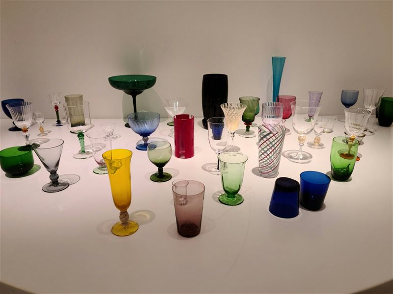
Murano Glass Museum
The Murano Glass Museum is housed in Palazzo Giustinian and traces the island's long role in glass production under Venetian rule. Murano workshops shaped the city's export economy and craft identity for centuries. Displays range from Roman finds to contemporary pieces, showing techniques such as filigree, millefiori, and mirror making developed on the lagoon island.
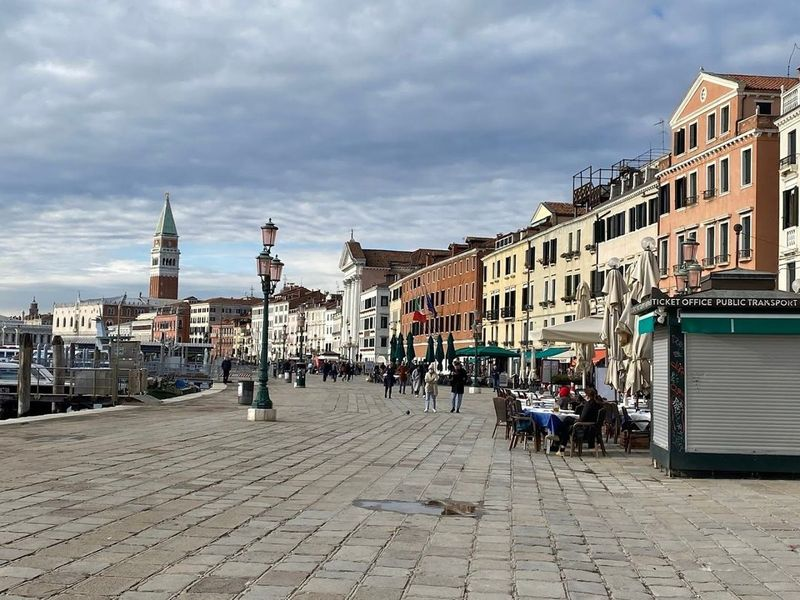
Monument to Victor Emmanuel II
The Monument to Victor Emmanuel II, affectionately referred to as "The Monument" by locals, stands proudly in Venice's Castilian district along Riva Degli Schiavoni. Erected in 1887 by the talented sculptor Ettore Ferrari, this striking bronze statue commemorates the tenth anniversary of the death of Vittorio Emanuele II, Italy's first king. As a significant landmark in Venice, it serves as a popular gathering spot for tourists and locals alike.
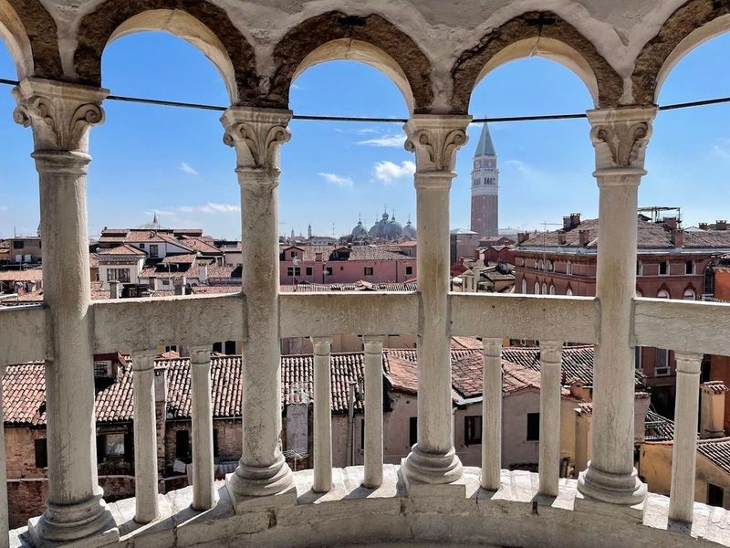
Palazzo Contarini del Bovolo
Nestled in the winding streets of Venice, Palazzo Contarini del Bovolo is a 15th-century palace that showcases the city's rich architectural heritage. This hidden gem features the remarkable Bovolo staircase, a spiral marvel that combines Veneto-Byzantine, Gothic, and Renaissance styles. Commissioned by nobleman Pietro Contarini to enhance his residence's facade, this enchanting structure has become a favorite among travellers seeking picturesque views.
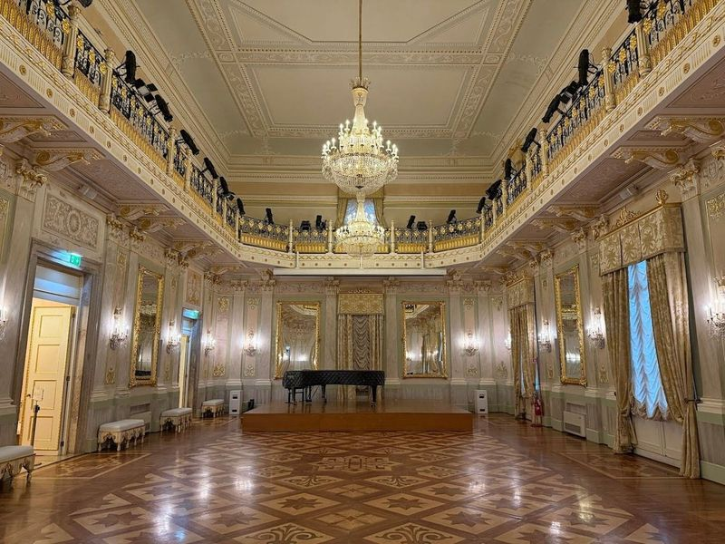
Teatro La Fenice
Teatro La Fenice, also known as "The Phoenix," is a renowned 1,000-seat theater in Italy that has faced destruction from three major fires since its opening in 1792. Despite these setbacks, the opera house has been meticulously restored and continues to host opera, ballet, and classical music performances. The opulent interiors with gold detailing and plush red velvet chairs provide an old-world ambiance for travellers to enjoy classic Italian opera.
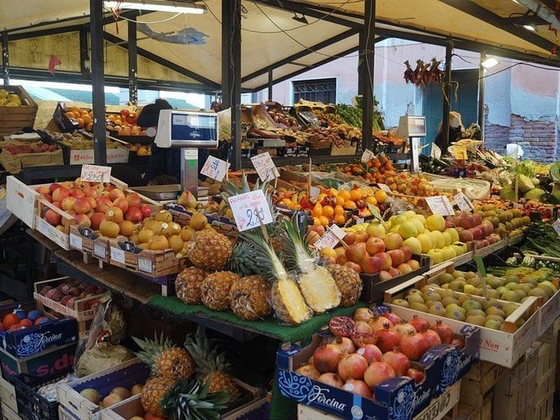
Mercato di Rialto
The Rialto Market, located beneath the Rialto Bridge in Venice, is a historic and bustling market that has been operating for almost a millennium. It consists of two sections - the main produce market and the Rialto Fish Market. travellers can explore stalls offering fresh seasonal fruits, vegetables, cheese, Italian cured meats, fish, and seafood. The market provides an authentic Venetian experience and has been a vital reference point for locals throughout history.
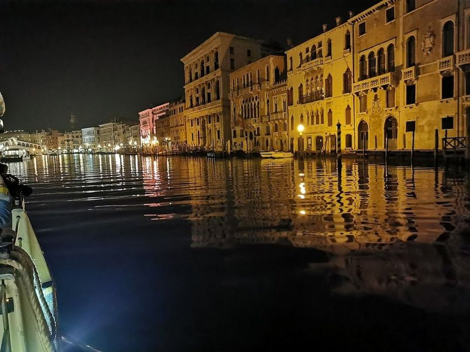
Grand Canal
The Grand Canal in Venice is a attraction, offering a unique perspective of the city. Instead of opting for an expensive gondola ride, taking the Vaporetto 1 waterbus from P.le Roma to St. Mark's Square provides an affordable and scenic alternative. The journey offers views of Venice's palazzos, landmarks like the Rialto Bridge and Salute church, as well as glimpses of luxurious hotels along the canal.
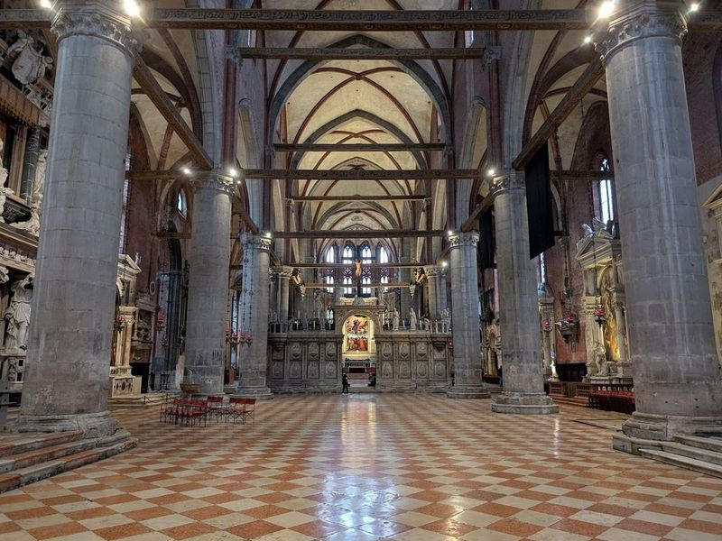
Basilica S.Maria Gloriosa dei Frari
The Basilica S.Maria Gloriosa dei Frari, affectionately known as The Frari, is a magnificent Gothic church that dates back to the 1330s. Nestled in the heart of Venice, this structure boasts russet-colored brickwork and is renowned for its impressive collection of Venetian art, including two masterpieces by Titian and his final resting place.
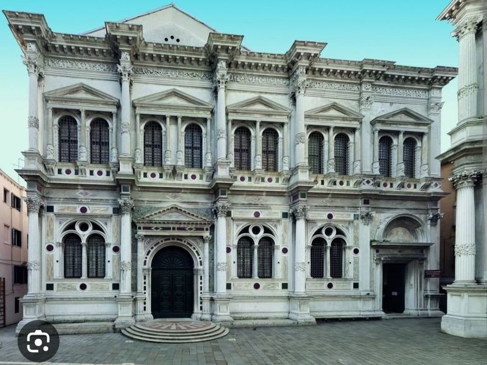
Scuola Grande di San Rocco
The Tintoretto Scuola Grande di San Rocco is an ornate 16th-century art museum in Venice, Italy. Originally a confraternity, it now showcases the works of the dramatic Renaissance artist Tintoretto. The building itself is emblematic of the city and houses valuable pieces such as 'St. Roch cures the plague-stricken' and famous works depicting the lives of Jesus and the Virgin Mary.
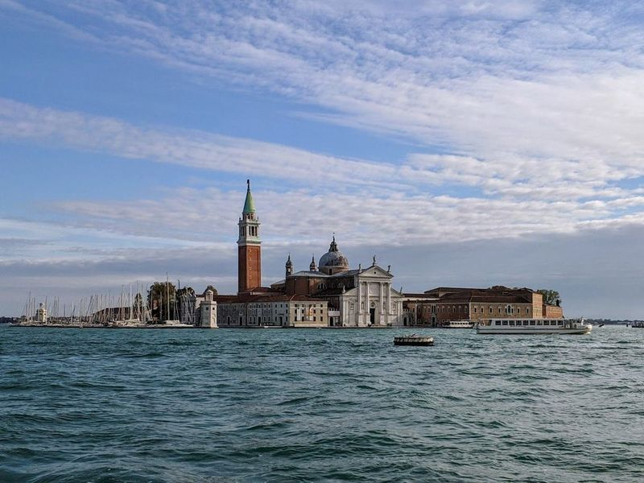
San Giorgio Maggiore Church
Located on an island in Venice, the Church of San Giorgio Maggiore is a 16th-century architectural masterpiece designed by Andrea Palladio. The church features a bright white facade made of Istrian stone and houses impressive works by artists such as Tintoretto, Sebastiano Ricci, Palma il Giovane, and Jacopo Bassano.
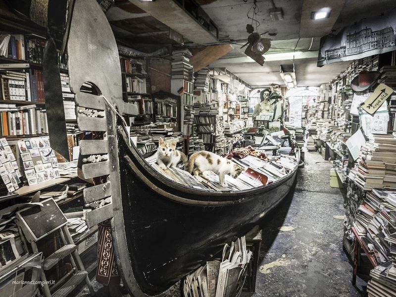
Libreria Acqua Alta
Libreria Acqua Alta is a charming and unconventional second-hand bookshop located in a quiet residential courtyard near the Ponte delle Tette in Venice. The shop is known for its chaotic yet cozy atmosphere, with books stacked in non-thematic piles, old bathtubs, and even a decommissioned gondola to protect them from tidal floods.
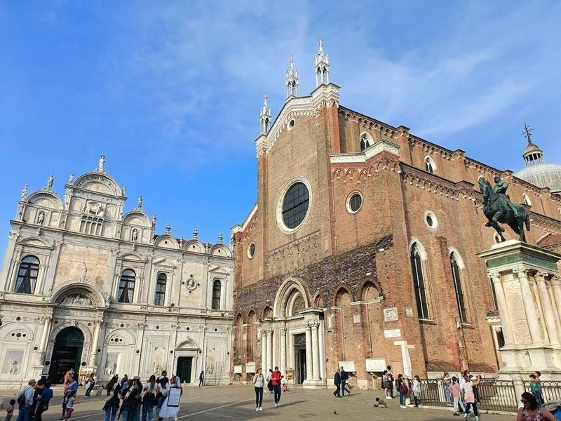
Basilica dei Santi Giovanni e Paolo
Basilica dei Santi Giovanni e Paolo, also known as St. John and Paul Basilica, is a magnificent Gothic church in Venice's Castello district. This grand edifice is the final resting place of 25 Venetian doges and boasts an impressive collection of art, including Veronese's ceiling decorations. The interior is adorned with captivating paintings, statues, and other ornate decorations on each grave.
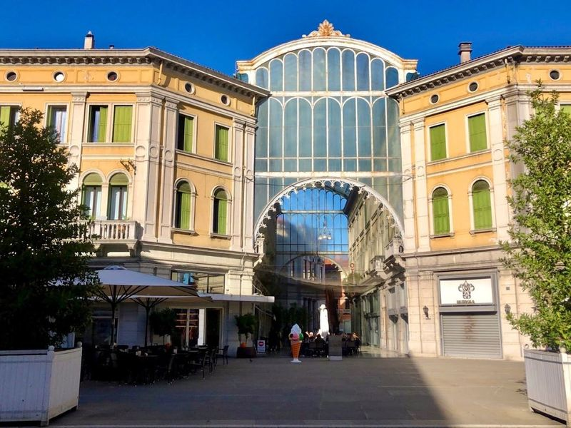
Piazza Erminio Ferretto
A visit to Mestre is incomplete without a stop at Piazza Erminio Ferretto, the vibrant heart of the city. Often referred to as 'Mestre's Living Room,' this bustling square serves as a social hub where locals gather for leisurely aperitifs amidst its charming medieval ambiance. The piazza is lined with inviting cafes and restaurants, making it an ideal spot to relax and savor authentic Italian gelato or a rich espresso.
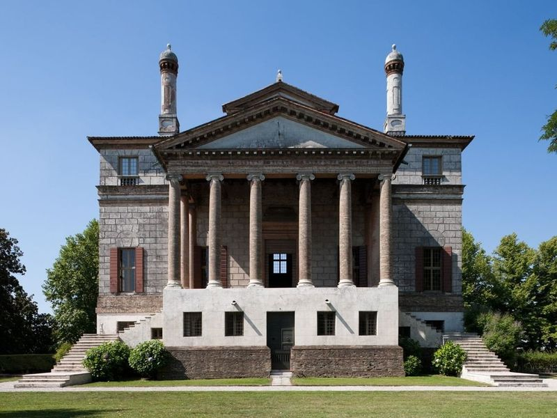
Villa Foscari
Villa Foscari, also known as La Malcontenta, is a magnificent 16th-century Palladian villa located in Mira, near Venice. Commissioned by the Foscari brothers, this regal mansion features an imposing facade and is adorned with floor-to-ceiling frescoes that follow a carefully designed iconographical program. The villa's interior boasts well-preserved rooms decorated with a large cycle of frescoes, offering travellers a glimpse into its rich history and architectural significance.
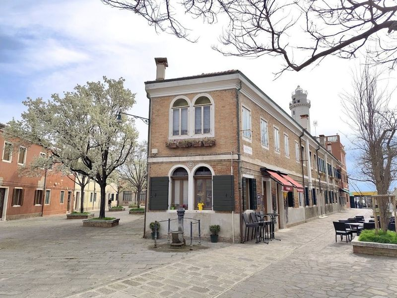
Murano Lighthouse
Faro di Murano, also known as the Murano Lighthouse, is a historic stone lighthouse constructed in 1934 and situated near a bustling ferry terminal. Positioned in the southeastern part of Murano Island, this active beacon welcomes travellers with its radiant presence as they approach by boat. While it cannot be ascended, it offers an excellent opportunity for capturing photographs.
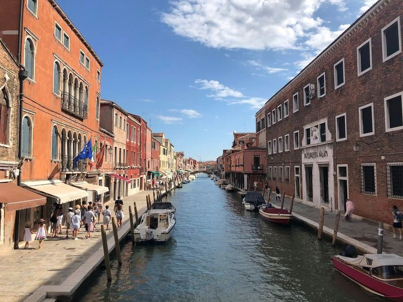
Former Church Santa Chiara Murano
Former Church Santa Chiara Murano, located in one of the oldest buildings in Murano, Italy, offers a mesmerizing glass blowing demonstration for a fee. The historic building houses skilled artisans who showcase their craftsmanship through intricate glass creations. travellers can witness live demonstrations and learn about the traditional techniques from friendly and charismatic masters.
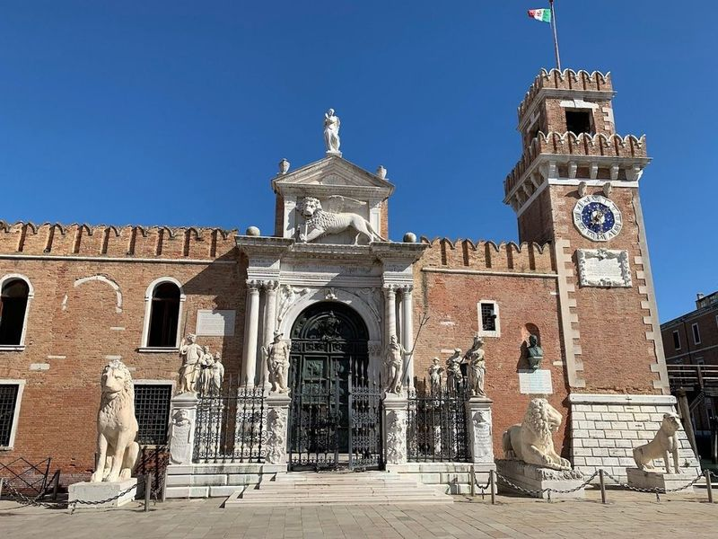
Arsenale di Venezia
The Arsenale di Venezia is a historic complex of shipyards and workshops that played a crucial role in Venice's maritime power. Founded in 1104, it was the largest shipyard in the world for centuries, employing over 16,000 workers at its peak. Today, it hosts cultural events, exhibitions, and trade fairs. Located in the city's north-eastern outskirts, reaching the Arsenale involves a pleasant walk through the Castello district's alleyways.
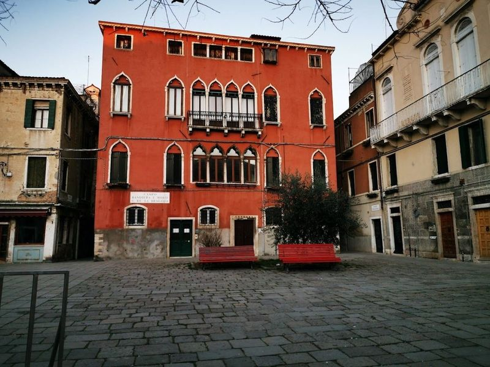
Campo Bandiera e Moro
Campo Bandiera e Moro is a charming and historic square located in the eastern part of Venice's main island. This picturesque spot, once known as Campo Bragora, was renamed to honor the Bandiera brothers and Domenico Moro, who sacrificed their lives for Italy during the Cosenza rebellions in 1844. The atmosphere here is friendly and inviting, making it a delightful escape from the more tourist-heavy areas like Piazza San Marco.
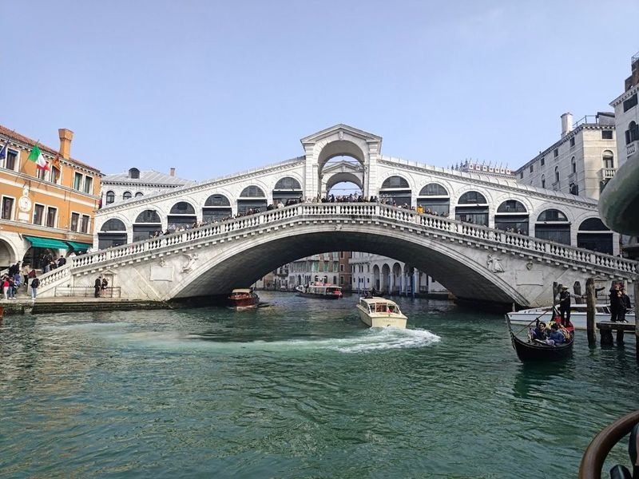
Venezia Santa Lucia
Stazione di Venezia Santa Lucia is a 1930s train station that serves domestic journeys and routes across Europe, including the famous Orient Express. From this station, travelers can embark on various scenic adventures. For instance, one can take a westward train to Monterosso, the northernmost village of Cinque Terre on the Ligurian Sea.
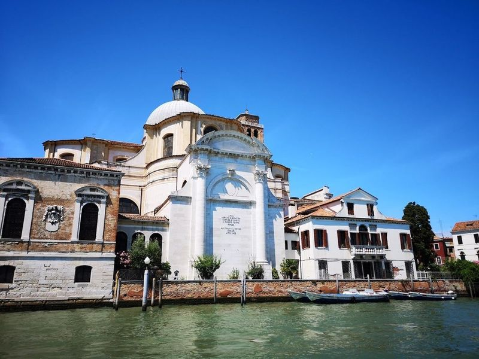
San Geremia
This beautiful and historic church is home to the mummified body of St Lucy. It's also a popular pilgrimage site, and find it just a few minutes' walk from Venice's central train station. The architecture is reminiscent of the Gothic period, and the detailed Romanesque features are impressive. If you're looking to explore Venetian architecture in detail, this is definitely a place to visit.
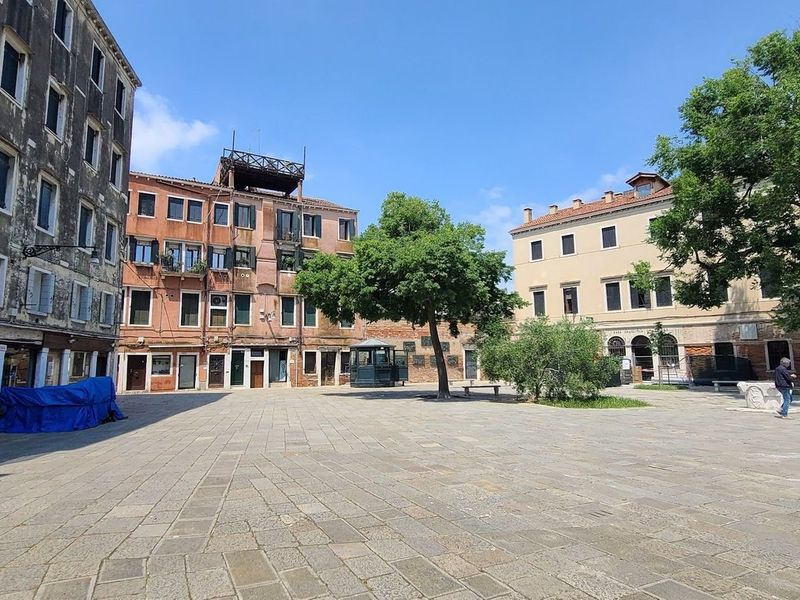
Jewish Quarter
Ghetto Ebraico - Comunità Ebraica di Venezia is a historic Jewish neighborhood in Venice, known for its two synagogues, kosher shops, and the Jewish Museum of Venice. The area was established in 1516 when the Jewish community was confined to an urban island, giving rise to the term 'ghetto.' The neighborhood consists of two sections: Ghetto Vecchio and Ghetto Nuovo, characterized by multi-story apartment buildings with low ceilings.
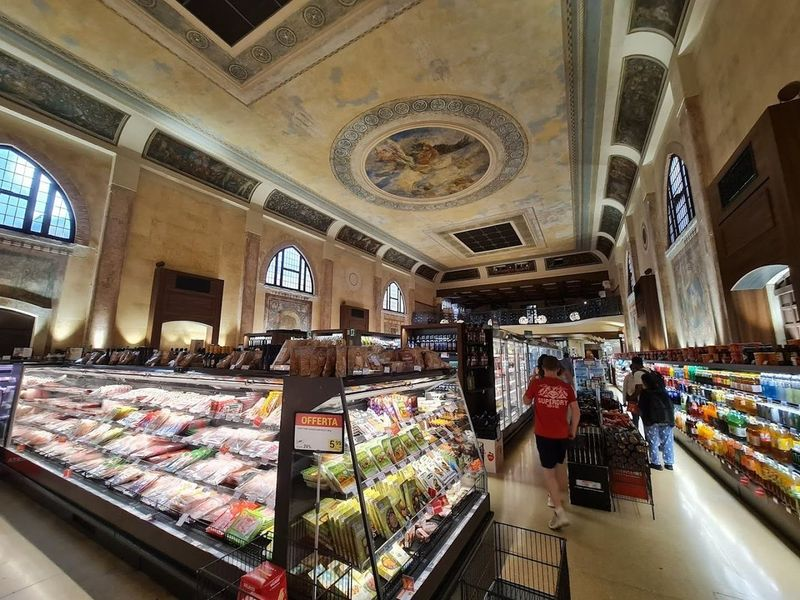
Despar Teatro Italia
Despar Teatro Italia in Venice is a supermarket that's a for food shoppers and anyone who appreciates creative store design. Housed in an old theater building, the interior and exterior have been beautifully transformed with a 2.5 million euro investment. The store offers a wide selection of Italian brand products in a properly air-conditioned space. Despite the transformation, the original decorations have been tastefully restored, adding to the unique ambiance.
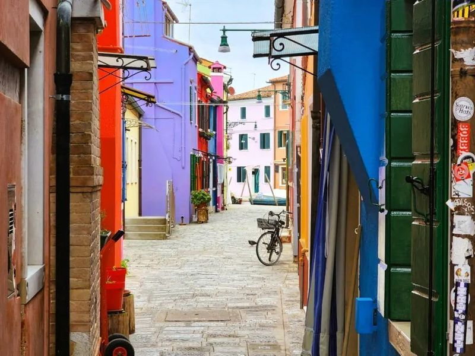
Burano
Burano is a vibrant fishing island known for its colorful houses, seafood restaurants, and lace museum. Unlike the popular Murano with its glass-making and tourist crowds, Burano offers a more tranquil experience with its charming multi-colored houses that exude dollhouse-like cuteness. The island's seclusion allows travellers to appreciate views of the lagoon and beyond, including the Veneto coast, Dolomite mountains, and the silhouette of Venice.
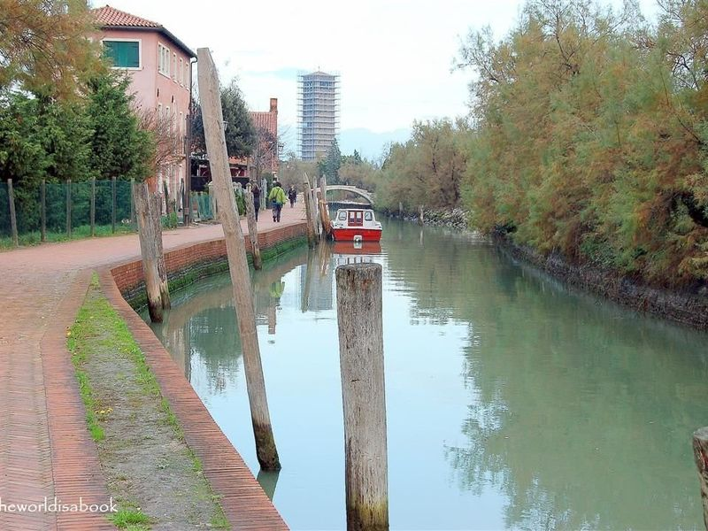
Torcello
Torcello is a small inhabited island in the Venetian lagoon, known for its historical significance and tranquil atmosphere. Once a thriving settlement, it now stands as a reminder of its glorious past. The island features notable landmarks such as the 7th-century Church of Santa Maria Assunta and the austere Santa Fosca, both showcasing impressive architecture and ancient mosaics.
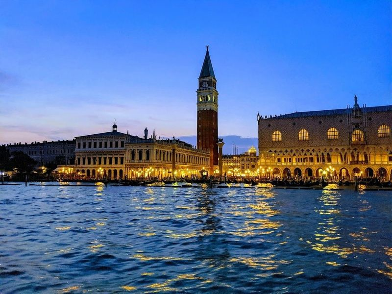
Giardini della Biennale
Giardini della Biennale is a serene garden in Venice that not only offers a peaceful retreat but also hosts art exhibitions and national pavilions designed by renowned architects. With a history dating back to Napoleon's era, the gardens became closely associated with the Biennale exhibition at the end of the 19th century. During this event, around thirty pavilions from different countries showcase an array of artworks.
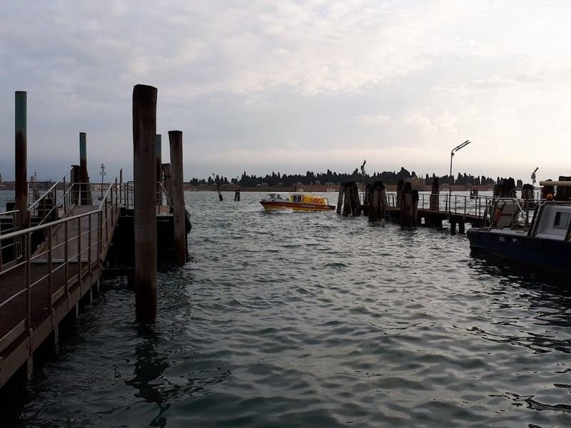
Ponte Chiodo
Ponte Chiodo is a historic arched canal footbridge in Venice, known for its unique feature of not having any balustrades. It is situated in the quiet Cannaregio district, making it a perfect spot for capturing photos without worrying about crowds. This picturesque bridge is one of only two in Venice without parapets, adding to its charm and making it a favorite location for Instagram enthusiasts. The absence of balustrades allows for creative photography opportunities.
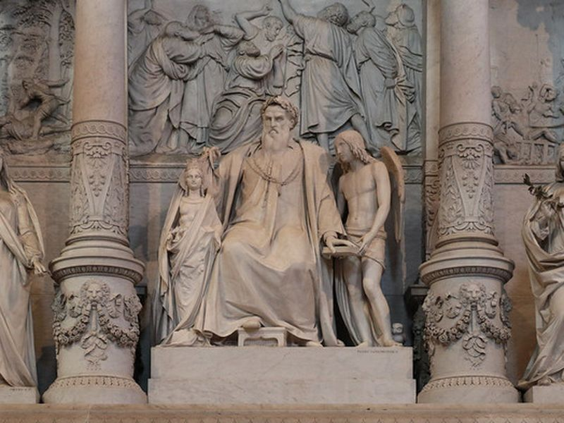
Church of Santa Maria Assunta ai Gesuiti
Situated in the Cannaregio district, the Jesuit church of Santa Maria Assunta is renowned for its magnificent Baroque interior. The walls feature remarkable green and white marble work meticulously carved to resemble draped damask fabric. The church also houses masterpieces by Titian and Tintoretto, offering a serene artistic experience away from the busiest crowds.
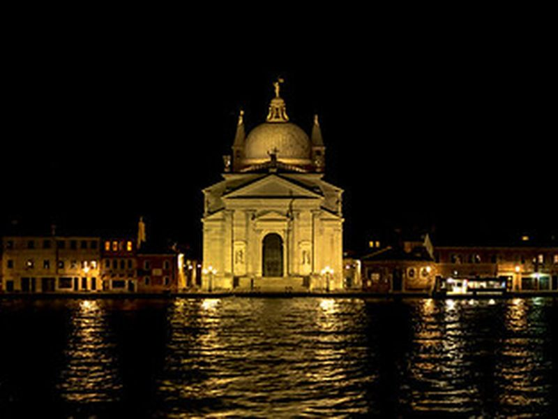
Chiesa del Santissimo Redentore
Designed by the prominent Renaissance architect Andrea Palladio, Il Redentore was built in the 16th century as a votive offering to thank God for the end of a devastating plague. Located on the island of Giudecca, its classical white facade and luminous interior reflect Palladian ideals of harmony and proportion. It remains the focal point of the annual Festa del Redentore.
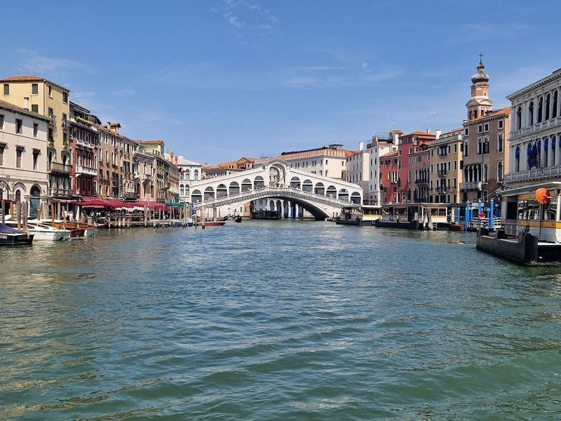
Ponte dell'Accademia
Ponte dell'Accademia, a charming wood-and-metal bridge over the Grand Canal in Venice, was opened in 1854 and is one of only four pedestrian bridges spanning the canal. Unlike the majority of Venice's stone and marble structures, this bridge stands out with its distinctive appearance. It is a popular spot for photography and is adorned with padlocks by lovers.
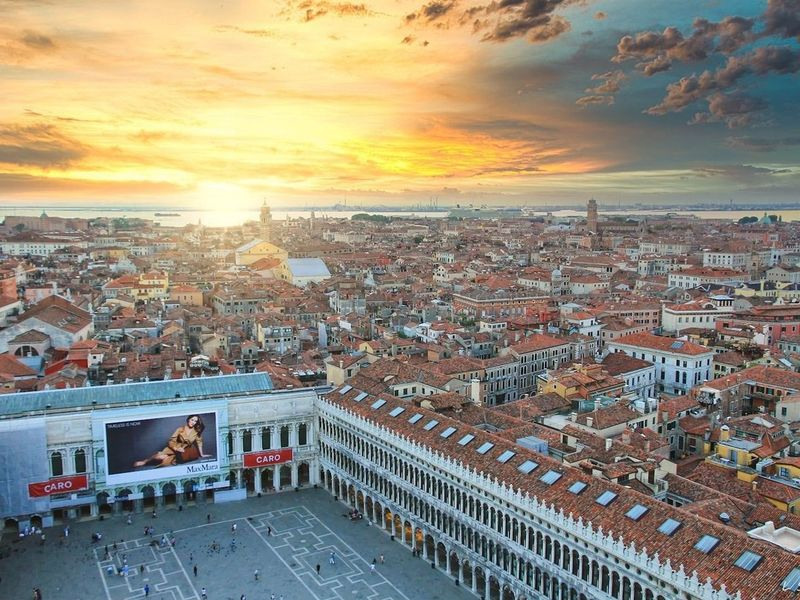
St Mark's Campanile
St Mark's Campanile is an impressive 16th-century cathedral tower located in Piazza San Marco, Venice. It offers views of the city and the surrounding area. travellers can take an elevator to the top and enjoy panoramic vistas of Piazza San Marco, the Doges Palace, St. Mark's Basilica, and the Venetian Lagoon. The tower provides a convenient way to experience aerial views without having to climb stairs.
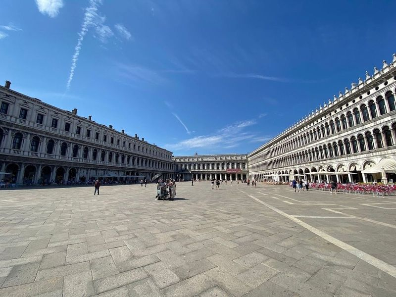
Torre dell'Orologio
The Clock Tower, a Renaissance structure dating back to 1499, offers city views and features a mechanical clock adorned with symbolic decorations. Situated in St. Mark's Square, it is surrounded by landmarks such as the Basilica di San Marco, Torre dell'Orologio, Campanile, and Doge's Palace. The square itself is grand and during autumn or winter months, it may be flooded with wooden platforms allowing people to move around.
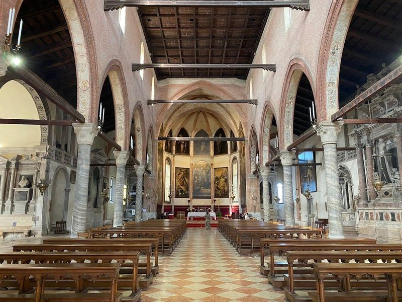
Church of Madonna dell'Orto
The Church of Madonna dell'Orto, originally known as St. Cristoforo Church, was renamed after a miraculous statue of the Virgin Mary arrived at the church. This 14th-century church in Cannaregio is adorned with a Gothic facade and cloisters. It houses numerous works by Tintoretto, who is also buried here. The artist's paintings are among the highlights of this hidden gem in Venice, making it a worthwhile visit for art enthusiasts.
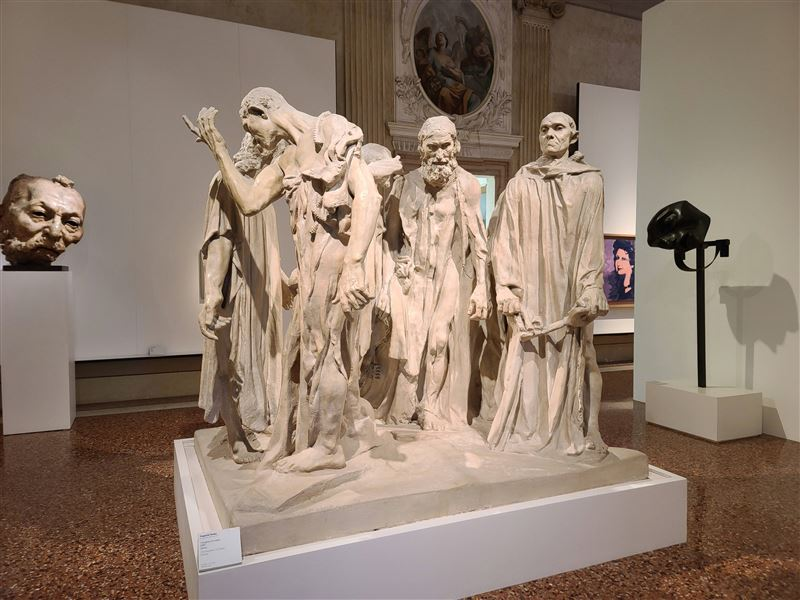
Ca' Pesaro International Gallery of Modern Art
Ca' Pesaro is a Baroque palace on the Grand Canal completed in the 18th century and now home to the International Gallery of Modern Art. The museum connects Venetian palatial architecture with later collections of modern painting and sculpture. Works by Klimt, Chagall, and Italian modernists fill rooms designed for a noble family on the Santa Croce waterfront.
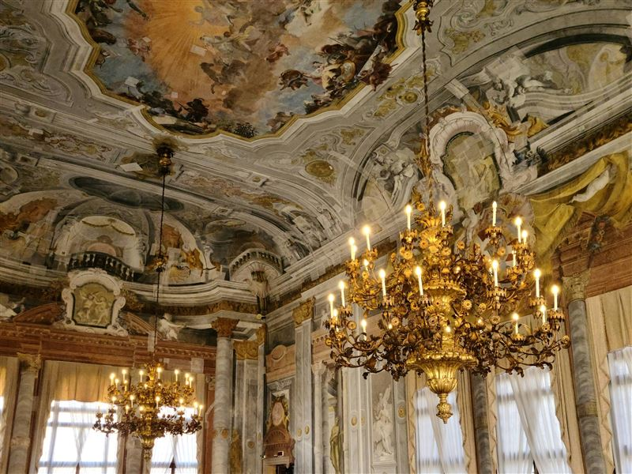
Ca' Rezzonico
Ca' Rezzonico is an 18th-century palace on the Grand Canal that now houses the Museum of 18th Century Venice. Its rooms, paintings, and furnishings present the social and artistic culture of the late republican city. Tiepolo ceilings, Murano chandeliers, and period furniture recreate the domestic world of Venetian nobility before the fall of the republic.